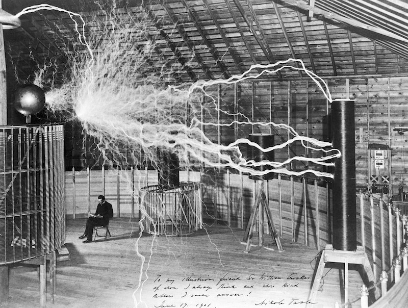
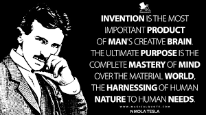

Nikola Tesla, l'un des esprits les plus brillants et prolifiques de l'histoire de la science, a laissé un héritage incomparable grâce à ses innombrables inventions et réalisations. Son influence a façonné notre monde moderne dans des domaines aussi variés que l'électricité, la communication sans fil, la mécanique, et bien d'autres encore. Parmi ses réalisations les plus marquantes, on compte son travail pionnier sur le courant alternatif (CA), qui a révolutionné l'industrie de l'électricité. Tesla a conçu des systèmes complets de production, de transmission et de distribution de courant alternatif, permettant une fourniture d'électricité efficace sur de longues distances. Cette avancée a eu un impact majeur sur la société en facilitant l'électrification des villes et des régions du monde entier. La bobine Tesla est une autre invention emblématique de Nikola Tesla. Cette bobine, qui produit des décharges électriques à haute fréquence, a ouvert de nouvelles voies dans la recherche scientifique et l'expérimentation. Tesla l'a utilisée pour explorer les phénomènes électromagnétiques, mais elle a également trouvé des applications dans des domaines tels que les communications sans fil et la transmission d'énergie. Tesla a également joué un rôle essentiel dans le développement de la technologie des ondes radio. Ses travaux sur la radio, bien que souvent éclipsés par ceux de Guglielmo Marconi, ont jeté les bases de la communication sans fil moderne. Tesla a déposé des brevets pour des systèmes de communication sans fil bien avant que la radio ne devienne un élément essentiel de notre société. En plus de ses contributions majeures dans le domaine de l'électricité et de la communication, Tesla a inventé une gamme d'autres dispositifs et machines révolutionnaires. Il a développé des moteurs électriques à induction efficaces, des turbines à vapeur améliorées et des dispositifs de télécommande innovants. Ses expérimentations ont également inclus des travaux sur l'énergie libre et des conceptions pour des armes défensives. Malgré ses nombreuses réalisations, Tesla a souvent lutté pour obtenir la reconnaissance qu'il méritait de son vivant. Ses idées audacieuses et ses projets ambitieux ont parfois été mal compris ou rejetés par ses contemporains. Cependant, son influence durable sur la science, la technologie et la société est indéniable. En résumé, Nikola Tesla reste une figure légendaire dont l'héritage continue de nous inspirer à ce jour. Ses inventions et ses réalisations ont non seulement changé le cours de l'histoire, mais elles continuent également de façonner notre avenir en nous incitant à repousser les limites de la connaissance et de l'ingéniosité.

